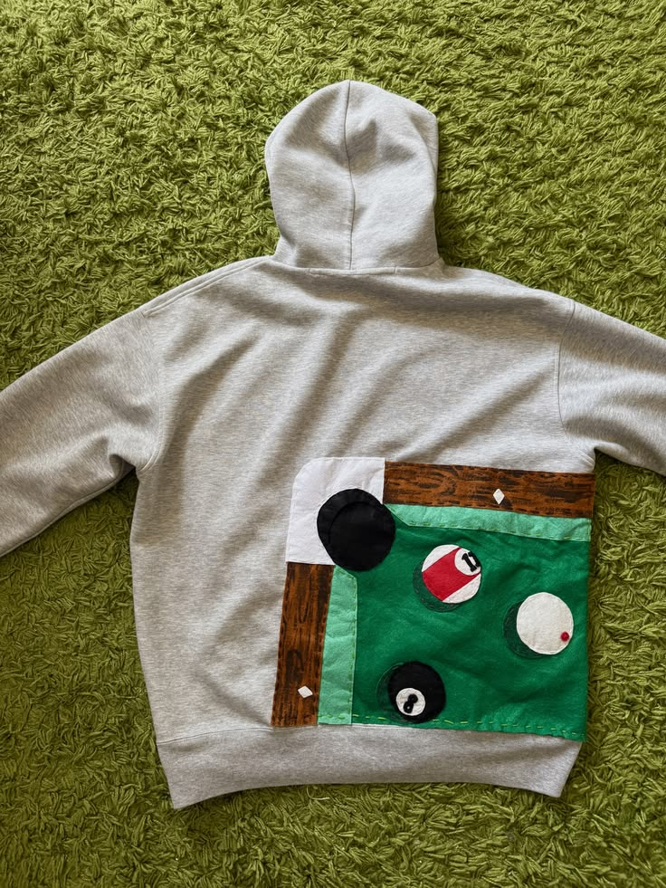
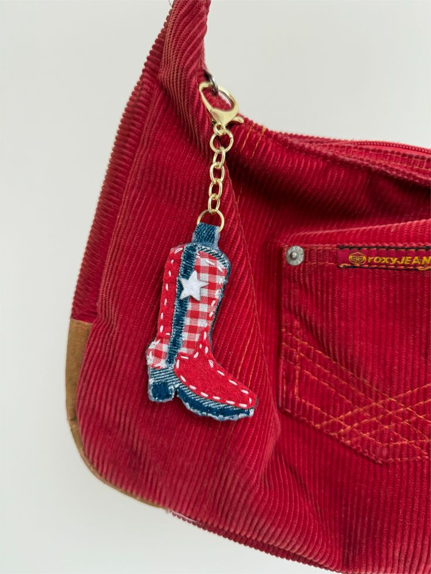
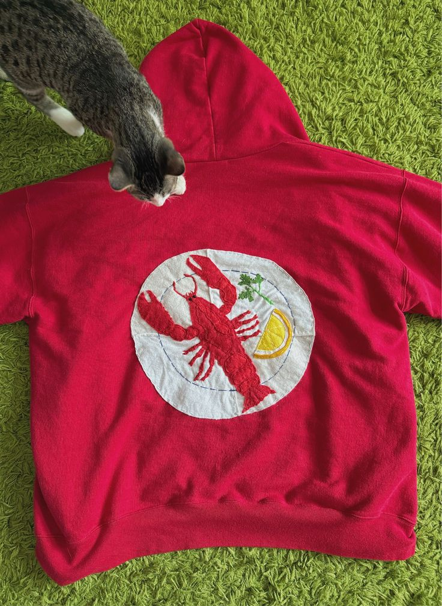
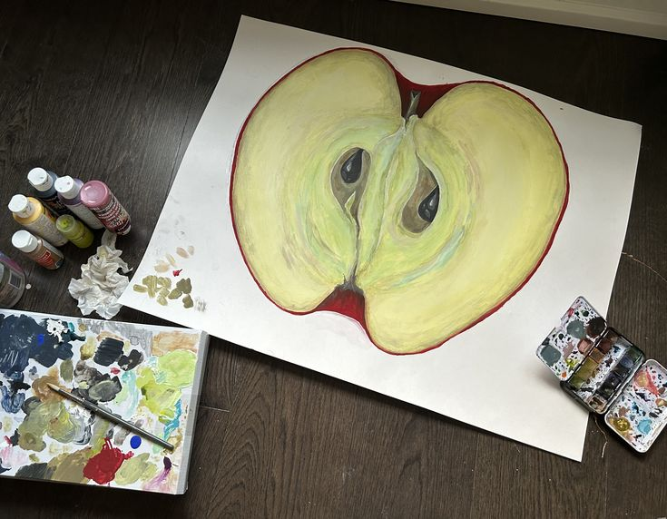

GRAPHIC DESIGN
Bringing random daydreams to life using photoshop and whatever images the internet throws at me!


check em out!
Bringing random daydreams to life using photoshop and whatever images the internet throws at me!
Sewing, painting, drawing and anything else I can get my hands on!






Photos of things that made me look twice, and appreciate them extra.